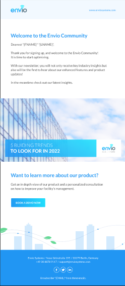
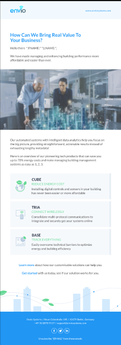

Turning a complex product into persona-driven messaging, and a multi-channel strategy into a steady stream of qualified leads.
A SaaS proptech startup needed a full-funnel, multi-channel marketing strategy across EMEA, and a way to turn a genuinely complex product into messaging people actually understood.
Build and run PPC, email, social, web, and event channels together, own CRM automation, translate the product into clear, persona-driven messaging, and lead a small team to execute it.
100+ qualified leads generated through inbound campaigns, with better MQL-to-SQL conversion and clearer pipeline visibility.
JLL / Envio Systems, a SaaS proptech startup, needed marketing that could scale across the EMEA region without fragmenting into disconnected channel efforts. The product itself was complex, the kind that's easy to describe accurately and completely fail to make interesting. Messaging needed to translate that complexity into something a specific buyer persona would actually respond to.
The strategy connected PPC, email, social, web, and event channels into one full-funnel system rather than running them in isolation, so a lead's journey stayed coherent regardless of where it started. CRM automation and workflows (Salesforce) were owned end to end, giving Sales and CX a clearer, shared view of the pipeline instead of a black box.
Inbound campaigns generated 100+ qualified leads, and owning CRM automation end to end improved both MQL-to-SQL conversion and how visible the pipeline was to Sales, Product, and CX. The clearer messaging didn't just look better, it moved more of the right people through the funnel.
A closer look at the campaigns, CRM automation, and brand refresh behind the numbers above.
Every email here runs through Salesforce Journeys, segmented against an MQL database so a new signup and a warmed-up lead never get the same message. The welcome email leads with insight, a building-trends roundup, to earn trust before asking for anything. The re-engagement email does the opposite: it goes straight to the value proposition, breaking the product into three plain-language pieces (CUBE, TRIA, BASE) so a facility manager who isn't technical can still see exactly what they'd be buying. Same brand, same visual system, two different jobs in the funnel.


Organic and paid content built for asset managers, facility managers, and sustainability managers, then run as targeted, retargeted, and A/B tested ad campaigns that generated 100+ qualified leads.
A full brand architecture and visual identity refresh, built with a graphic designer to make complex building technology feel approachable to a non-technical, senior audience, carried through the product UI, dashboards, and site.